| Team member | SRN | Primary responsibility |
|---|---|---|
| SUJAL Y | PES1UG24CS475 | Relational database & core backend |
| SUJAN H | PES1UG24CS477 | NoSQL / vector databases & Next.js application |
When a disaster strikes, relief work is usually coordinated through phone calls and spreadsheets. Requests are duplicated, two coordinators promise the same last truck of water, and nobody knows what reached which camp. ReliefFlow replaces this with a single transactional platform.
Relief camps raise resource requests; coordinators approve them, allocate stock from warehouses and plan deliveries; drivers report progress; field officers file incident reports. Every step is protected by the database itself:
Structured operational data lives in PostgreSQL (source of truth). Free-form field reports live as documents in MongoDB (validation, text index, aggregation pipelines). Incident reports, requests and disasters are embedded with a local sentence-transformer model (all-MiniLM-L6-v2) and stored in pgvector for semantic similarity search with an HNSW index. Redis caches the dashboard and Neo4j answers multi-hop relationship questions.
A Next.js web application provides a command-centre dashboard, map, request pipeline, explainable allocation recommendations and analytics. A built-in Database Engineering Lab runs about 70 real SQL demonstrations, concurrency scenarios and RBAC scenarios on a safe copy of the data. The system is covered by 27 unit tests, 30 end-to-end integration checks (including a Playwright browser run) and 4 live-service tests.
ReliefFlow is not a CRUD application. Its core value is a multi-step, concurrent workflow where database guarantees matter:
Disaster → affected locations → relief camp → resource request → approval → allocation (stock deduction) → delivery (vehicle, driver, crew) → fulfilment
In scope:
Out of scope:
| ID | Requirement | Role(s) |
|---|---|---|
| FR1 | Sign in and out; sessions expire after 8 h; login throttling | All |
| FR2 | Register and edit disasters; record affected locations and population | Admin, Coordinator |
| FR3 | Manage camps (capacity, occupancy, status); admit and discharge people atomically | Admin, Coordinator, Field officer |
| FR4 | Manage warehouses, resources, categories, locations, vehicles, volunteers | Admin, Coordinator |
| FR5 | Adjust stock with a reason; low-stock alerts; full movement history | Admin, Coordinator |
| FR6 | Raise a multi-item resource request for a camp | Admin, Coordinator, Field officer |
| FR7 | Approve, reject or cancel requests (state machine) | Admin, Coordinator |
| FR8 | Allocate stock from warehouses with explained recommendations; partial fulfilment | Admin, Coordinator |
| FR9 | Cancel an allocation before dispatch (stock restored exactly once) | Admin, Coordinator |
| FR10 | Plan deliveries with a vehicle, driver and volunteer crew; no double booking | Admin, Coordinator |
| FR11 | Progress a delivery (dispatch / delayed / delivered) | Driver (own only), Coordinator |
| FR12 | File, search (keyword and semantic), annotate and delete incident reports | Staff (delete: Admin, Coordinator) |
| FR13 | Dashboard, map, demand intelligence and analytics computed from live data | Admin, Coordinator, Field officer |
| FR14 | User administration: create users, change roles, deactivate, reset passwords, revoke sessions | Admin |
| FR15 | Audit trail and field-level change history | Admin, Coordinator |
| FR16 | Database lab: SQL playground, demos, concurrency, optimisation, normalisation, RBAC | All |
Non-functional requirements:
| Layer | Technology | Why it was chosen for this data |
|---|---|---|
| Frontend | Next.js 15 (App Router), React 19, TypeScript | One codebase for UI and API; server route handlers sit next to the data. |
| Backend / API | Next.js route handlers, Zod validation, node-postgres, MongoDB driver | A typed, validated API layer; parameterised SQL. |
| SQL (mandatory) | PostgreSQL 16 | Requests, stock, allocations and deliveries are highly related and must stay consistent under concurrent updates. That needs ACID transactions, foreign keys, CHECK constraints, triggers, row locks and row-level security, which only a relational DBMS gives together. |
| NoSQL | MongoDB 7 | Incident reports are semi-structured (free text, optional coordinates, tags, a growing list of field updates) and are always read as a whole. A document with embedded sub-documents fits naturally; the schema can evolve; text indexes and aggregation pipelines serve search and analytics. |
| Vector | PostgreSQL + pgvector, local all-MiniLM-L6-v2 embeddings | Field reports are text-heavy; coordinators search by meaning ("children sick from dirty water"), not exact words. Embeddings plus cosine similarity find related reports even with no shared vocabulary. pgvector keeps vectors in a familiar SQL database with an HNSW index. |
| Key-value (optional) | Redis 7 | Dashboard aggregates are read often and change rarely: a TTL cache with invalidation on write. |
| Graph (optional) | Neo4j 5 | Multi-hop relationship questions (shortest path from a disaster to a warehouse) are natural in Cypher. |
| Infrastructure | Docker Compose | Reproducible local databases. |
| Version control | Git + GitHub | Source history and collaboration. |
| Testing | node:test, Playwright | Unit, integration and browser tests. |
Data ownership rule: PostgreSQL is the single source of truth for operational data. MongoDB owns incident documents. Redis, Neo4j and pgvector hold derived copies that are rebuilt explicitly. No distributed transaction is claimed across stores.
Browser (Next.js React pages) ── presentation: forms, tables, dashboard, map, lab
│ HTTPS JSON (same-origin), httpOnly session cookie
Next.js route handlers (/api/*) ── application: auth · RBAC · Zod validation · transactions
│ endpoint() → actor() → schema.parse() → transaction(): BEGIN; SET LOCAL ROLE rf_<role> …
├── PostgreSQL 16 (source of truth: 25 tables, triggers, views, procedures, RLS)
├── MongoDB 7 (incident_reports documents, text index, aggregation)
├── pgvector (document_vectors, 384-d MiniLM embeddings, HNSW cosine index)
├── Redis 7 (dashboard cache, rate limits) — optional
└── Neo4j 5 (graph projection, Cypher) — optionalConfiguration comes only from environment variables (DATABASE_URL, MONGODB_URI, REDIS_URL, NEO4J_*, VECTOR_DATABASE_URL) in .env and .env.local. These files are excluded from Git, and no credential is hard-coded in the source.
The ER diagram uses Chen notation and covers the whole database: 24 entities and 34 relationships, with weak entities, identifying relationships, derived, multivalued and composite attributes, cardinalities and participation. It is generated from the live catalog; the generator fails if any of the 34 foreign keys is missing from it.
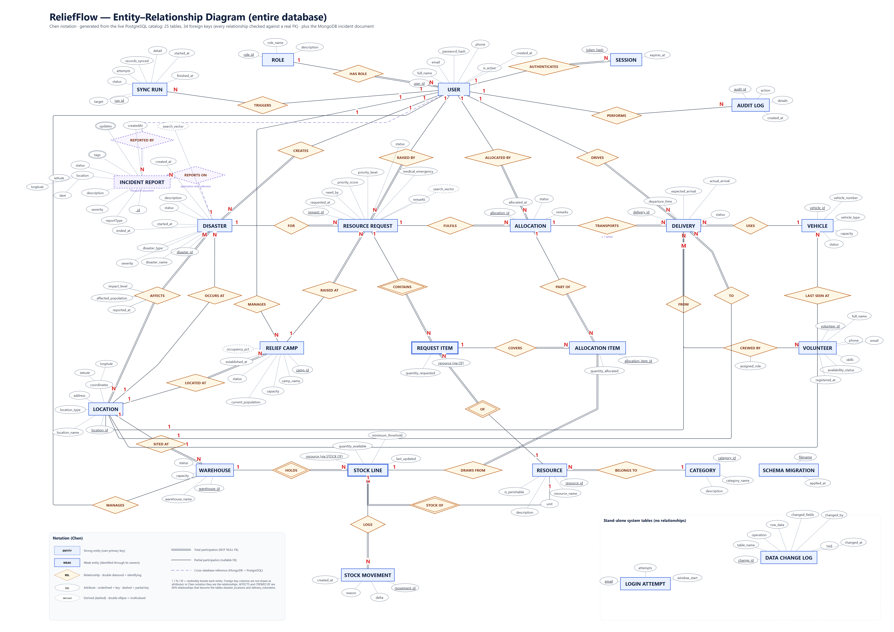
Editable source: docs/viva/ReliefFlow-ER-Diagram.drawio.
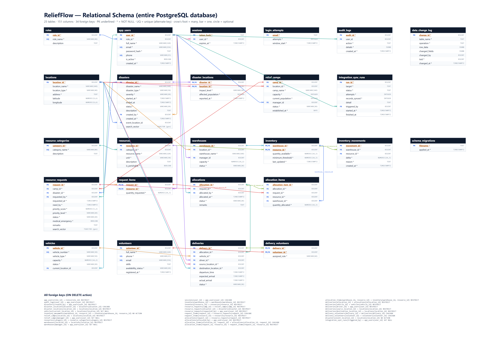
Editable source: docs/viva/ReliefFlow-Relational-Schema.drawio.
| Database object (live catalog) | Count |
|---|---|
| Tables | 25 |
| Columns | 151 |
| Foreign keys | 34 |
| CHECK constraints | 42 |
| Views | 5 |
| Indexes | 65 |
| Triggers | 16 |
| Functions | 13 |
| Procedures | 1 |
| Row-level security policies | 4 |
| Database roles | 4 |
| Relationship (ER) | Cardinality | Implemented as |
|---|---|---|
| Camp RAISES Request | 1 : N, request total | resource_requests.camp_id NOT NULL FK |
| Disaster AFFECTS Location | M : N with attributes | table disaster_locations (PK disaster_id, location_id) |
| Request CONTAINS Request Item | identifying, weak entity | request_items PK (request_id, resource_id), ON DELETE CASCADE |
| Warehouse HOLDS Stock Line OF Resource | identifying, weak entity | inventory PK (warehouse_id, resource_id) |
| Allocation Item COVERS Request Item / DRAWS FROM Stock Line | N : 1 each | composite FKs (request_id, resource_id) and (warehouse_id, resource_id) |
| Delivery TRANSPORTS Allocation | N : 1, ≤ 1 active | FK + partial unique index WHERE status <> 'CANCELLED' |
| Delivery CREWED BY Volunteer | M : N | table delivery_volunteers |
Constraint highlights:
CHECK (quantity_available >= 0) on stock;CHECK (current_population <= capacity), and status / occupancy consistency, on camps;CHECK (ended_at >= started_at) on disasters;need_by >= requested_at on requests;| ER element | Rule applied |
|---|---|
| Strong entity | Table with a surrogate identity PK (GENERATED ALWAYS AS IDENTITY) |
| Weak entity | Table whose PK includes the owner's PK |
| 1 : N | FK on the N side; NOT NULL when participation is total |
| M : N | Junction table, PK = both FKs, relationship attributes stored there |
| Composite attribute | Flattened (coordinates → latitude, longitude) |
| Derived attribute | Not stored (occupancy %) or a GENERATED column (search_vector) |
| Multivalued attribute | Array in MongoDB (tags, updates) |
Collection incident_reports, one document per field report:
{ "_id": ObjectId, "disasterId": 11, "reportedBy": 7, "reporterName": "…",
"reportType": "MEDICAL", "severity": "CRITICAL", "status": "OPEN",
"description": "Cluster of acute diarrhoea among children…",
"location": { "label": "Paravur Government School Camp", "latitude": 10.1517, "longitude": 76.229 },
"tags": ["waterborne", "children"],
"updates": [ { "note": "Medical team dispatched", "by": 6, "byName": "…", "at": ISODate } ],
"createdAt": ISODate, "updatedAt": ISODate }The model:
location and updates, read together with the report.disasterId and reportedBy, validated against PostgreSQL before every insert.$jsonSchema with required fields, enums and lengths.| Question (requirement §8) | ReliefFlow answer |
|---|---|
| What data becomes embeddings? | Incident descriptions with their tags and location, resource-request summaries (camp, items, remarks) and disaster descriptions: 40 documents in the sample data. |
| Which model? | sentence-transformers all-MiniLM-L6-v2, run locally through Transformers.js / ONNX Runtime: mean pooling, L2-normalised, 384 dimensions. No API key is needed and no text leaves the machine. Voyage AI or OpenAI is used instead if a key is configured; a labelled lexical fallback covers offline use. |
| How are vectors stored? | Table document_vectors(source, source_id, provider, dims, title, content, metadata JSONB, embedding vector, synced_at), PK (source, source_id, provider), in a separate PostgreSQL + pgvector database. |
| Index | Partial expression HNSW index ((embedding::vector(384)) vector_cosine_ops) WHERE provider = 'minilm' |
| Similarity metric | Cosine similarity = 1 − cosine distance (<=> operator). |
| Retrieval strategy | The query text is embedded with the same model, then ORDER BY embedding <=> query LIMIT k (k-nearest neighbours), optionally filtered by source. Results are shown beside MongoDB keyword results. Synchronisation is explicit (Re-embed button) and recorded in integration_sync_runs. |
The data dictionary is stored inside PostgreSQL as table and column comments (COMMENT ON, migration 008) and is read straight from the catalog.
Allocation lines: how much of which resource from which warehouse (immutable).
| Column | Type | Key | Null | Description |
|---|---|---|---|---|
| allocation_item_id | BIGINT | PK | NOT NULL | Surrogate primary key. |
| allocation_id | BIGINT | FK | NOT NULL | Composite FK (allocation_id, request_id) to allocations. |
| request_id | BIGINT | FK | NOT NULL | Shared by two composite FKs: ties the line to its request line. |
| resource_id | BIGINT | FK | NOT NULL | Composite FK part to request_items and inventory. |
| warehouse_id | BIGINT | FK | NOT NULL | Composite FK part to inventory (the stock drawn from). |
| quantity_allocated | NUMERIC(14,3) | NOT NULL | Quantity committed (> 0, <= stock and outstanding demand). |
Commitment of stock to a request.
| Column | Type | Key | Null | Description |
|---|---|---|---|---|
| allocation_id | BIGINT | PK | NOT NULL | Surrogate primary key. |
| request_id | BIGINT | FK | NOT NULL | FK to the request being fulfilled. |
| allocated_by | BIGINT | FK | NOT NULL | FK to the coordinator who allocated. |
| allocated_at | TIMESTAMPTZ | NOT NULL | When stock was committed. | |
| status | VARCHAR(20) | NOT NULL | ALLOCATED → IN_TRANSIT → DELIVERED, or ALLOCATED → CANCELLED (stock restored). | |
| remarks | TEXT | NULL | Optional notes. |
People who can sign in. Passwords are stored only as bcrypt hashes.
| Column | Type | Key | Null | Description |
|---|---|---|---|---|
| user_id | BIGINT | PK | NOT NULL | Surrogate primary key. |
| role_id | BIGINT | FK | NOT NULL | FK to roles: the user's single role. |
| full_name | VARCHAR(120) | NOT NULL | Display name. | |
| VARCHAR(254) | NOT NULL | Login e-mail (alternate key, format-checked). | ||
| password_hash | TEXT | NOT NULL | bcrypt hash (cost 12); readable only by rf_admin. | |
| phone | VARCHAR(25) | NULL | Optional unique phone number. | |
| is_active | BOOLEAN | NOT NULL | FALSE blocks sign-in and invalidates sessions. | |
| created_at | TIMESTAMPTZ | NOT NULL | When the account was created. |
Application audit trail, written in the same transaction as each change.
| Column | Type | Key | Null | Description |
|---|---|---|---|---|
| audit_id | BIGINT | PK | NOT NULL | Surrogate primary key. |
| user_id | BIGINT | FK | NULL | FK to the acting user. |
| action | TEXT | NOT NULL | Operation code, e.g. ALLOCATIONS, DELIVERY_STATUS. | |
| details | JSONB | NOT NULL | JSON input and result of the operation (passwords removed). | |
| created_at | TIMESTAMPTZ | NOT NULL | When the action happened. |
Row-level change history written by the log_row_change() trigger.
| Column | Type | Key | Null | Description |
|---|---|---|---|---|
| change_id | BIGINT | PK | NOT NULL | Surrogate primary key. |
| table_name | TEXT | NOT NULL | Table that changed. | |
| operation | TEXT | NOT NULL | INSERT, UPDATE or DELETE. | |
| row_data | JSONB | NULL | Row after (or before, for DELETE) the change, without secrets. | |
| changed_fields | JSONB | NULL | JSON diff {field: {from, to}} for UPDATEs. | |
| changed_by | BIGINT | NULL | Acting user id taken from the reliefflow.user_id session setting. | |
| txid | BIGINT | NOT NULL | Transaction id, groups changes made together. | |
| changed_at | TIMESTAMPTZ | NOT NULL | When the change happened. |
Transport of one allocation (row-level security: drivers see only their own).
| Column | Type | Key | Null | Description |
|---|---|---|---|---|
| delivery_id | BIGINT | PK | NOT NULL | Surrogate primary key. |
| allocation_id | BIGINT | FK | NOT NULL | FK to the allocation transported (one active delivery each). |
| vehicle_id | BIGINT | FK | NOT NULL | FK to the vehicle (one active delivery each). |
| driver_id | BIGINT | FK | NOT NULL | FK to the driver (one active delivery each). |
| source_location_id | BIGINT | FK | NOT NULL | FK: pickup location (warehouse). |
| destination_location_id | BIGINT | FK | NOT NULL | FK: drop location (camp). |
| departure_time | TIMESTAMPTZ | NULL | Set when dispatched. | |
| expected_arrival | TIMESTAMPTZ | NULL | Planned arrival. | |
| actual_arrival | TIMESTAMPTZ | NULL | Set when delivered. | |
| status | VARCHAR(20) | NOT NULL | PLANNED → IN_TRANSIT ↔ DELAYED → DELIVERED, or PLANNED → CANCELLED (trigger-enforced). |
M:N: volunteers crewing a delivery.
| Column | Type | Key | Null | Description |
|---|---|---|---|---|
| delivery_id | BIGINT | PK, FK | NOT NULL | PK part / FK to deliveries (cascade). |
| volunteer_id | BIGINT | PK, FK | NOT NULL | PK part / FK to volunteers (cascade). |
| assigned_role | VARCHAR(60) | NOT NULL | Role on the delivery, e.g. LOADING_SUPPORT. |
M:N: which locations a disaster affects, with impact attributes.
| Column | Type | Key | Null | Description |
|---|---|---|---|---|
| disaster_id | BIGINT | PK, FK | NOT NULL | PK part / FK to disasters. |
| location_id | BIGINT | PK, FK | NOT NULL | PK part / FK to locations. |
| impact_level | VARCHAR(20) | NOT NULL | LOW, MODERATE, HIGH or SEVERE. | |
| affected_population | INTEGER | NOT NULL | People affected at this location (>= 0). | |
| reported_at | TIMESTAMPTZ | NOT NULL | When the impact was reported. |
Disaster events being responded to.
| Column | Type | Key | Null | Description |
|---|---|---|---|---|
| disaster_id | BIGINT | PK | NOT NULL | Surrogate primary key. |
| disaster_name | VARCHAR(160) | NOT NULL | Event name (duplicate events rejected by trigger). | |
| disaster_type | VARCHAR(50) | NOT NULL | FLOOD, CYCLONE, EARTHQUAKE, ... | |
| severity | VARCHAR(20) | NOT NULL | LOW, MODERATE, HIGH or CRITICAL. | |
| started_at | TIMESTAMPTZ | NOT NULL | When the event started. | |
| ended_at | TIMESTAMPTZ | NULL | When it was closed (must be after started_at). | |
| status | VARCHAR(20) | NOT NULL | ACTIVE, CONTAINED or CLOSED. | |
| description | TEXT | NULL | Free-text situation summary. | |
| created_by | BIGINT | FK | NOT NULL | FK to the coordinator who registered it. |
| created_at | TIMESTAMPTZ | NOT NULL | Registration time. | |
| event_location_id | BIGINT | FK | NULL | FK to the main event location. |
| search_vector | TSVECTOR | NULL | Generated tsvector for full-text search (GIN indexed). |
One row per Neo4j / vector synchronisation run.
| Column | Type | Key | Null | Description |
|---|---|---|---|---|
| run_id | BIGINT | PK | NOT NULL | Surrogate primary key. |
| target | TEXT | NOT NULL | neo4j or vector. | |
| status | TEXT | NOT NULL | RUNNING, SUCCEEDED or FAILED. | |
| attempts | INTEGER | NOT NULL | Attempts used (max 3). | |
| records_synced | INTEGER | NOT NULL | Records written to the target. | |
| detail | TEXT | NULL | Summary or failure reason. | |
| triggered_by | BIGINT | FK | NULL | FK to the user who started the sync. |
| started_at | TIMESTAMPTZ | NOT NULL | Start time. | |
| finished_at | TIMESTAMPTZ | NULL | End time (NULL while running). |
Stock line: quantity of one resource in one warehouse (weak entity).
| Column | Type | Key | Null | Description |
|---|---|---|---|---|
| warehouse_id | BIGINT | PK, FK | NOT NULL | PK part / FK to warehouses. |
| resource_id | BIGINT | PK, FK | NOT NULL | PK part / FK to resources. |
| quantity_available | NUMERIC(14,3) | NOT NULL | Units on hand (CHECK >= 0). | |
| minimum_threshold | NUMERIC(14,3) | NOT NULL | Low-stock alert level. | |
| last_updated | TIMESTAMPTZ | NOT NULL | Time of the last stock change. |
Every stock change with its reason (written by trigger).
| Column | Type | Key | Null | Description |
|---|---|---|---|---|
| movement_id | BIGINT | PK | NOT NULL | Surrogate primary key. |
| warehouse_id | BIGINT | FK | NOT NULL | Composite FK part to inventory. |
| resource_id | BIGINT | FK | NOT NULL | Composite FK part to inventory. |
| delta | NUMERIC(14,3) | NOT NULL | Signed change (+ received, - dispatched). | |
| reason | TEXT | NOT NULL | Why stock changed. | |
| created_at | TIMESTAMPTZ | NOT NULL | When it changed. |
Places: districts, camp areas, depots. Coordinates drive the map and distances.
| Column | Type | Key | Null | Description |
|---|---|---|---|---|
| location_id | BIGINT | PK | NOT NULL | Surrogate primary key. |
| location_name | VARCHAR(160) | NOT NULL | Name of the place. | |
| location_type | VARCHAR(40) | NOT NULL | DISTRICT, CAMP_AREA, DEPOT, WARD, ... | |
| address | TEXT | NOT NULL | Postal/landmark address. | |
| latitude | NUMERIC(9,6) | NULL | WGS-84 latitude (-90..90). | |
| longitude | NUMERIC(9,6) | NULL | WGS-84 longitude (-180..180). |
Login throttling window per e-mail.
| Column | Type | Key | Null | Description |
|---|---|---|---|---|
| TEXT | PK | NOT NULL | Normalised e-mail being attempted (primary key). | |
| attempts | INTEGER | NOT NULL | Failed attempts in the current window. | |
| window_start | TIMESTAMPTZ | NOT NULL | Start of the 15-minute window. |
Shelters with capacity and current occupancy.
| Column | Type | Key | Null | Description |
|---|---|---|---|---|
| camp_id | BIGINT | PK | NOT NULL | Surrogate primary key. |
| location_id | BIGINT | FK | NOT NULL | FK to the camp location. |
| camp_name | VARCHAR(160) | NOT NULL | Camp name. | |
| capacity | INTEGER | NOT NULL | Maximum people (> 0). | |
| current_population | INTEGER | NOT NULL | People sheltered now (0..capacity). | |
| manager_id | BIGINT | FK | NULL | Optional FK to the managing user. |
| status | VARCHAR(20) | NOT NULL | OPEN, FULL (= at capacity) or CLOSED (= empty). | |
| established_at | DATE | NOT NULL | Opening date. |
Lines of a request: resource and quantity (weak entity).
| Column | Type | Key | Null | Description |
|---|---|---|---|---|
| request_id | BIGINT | PK, FK | NOT NULL | PK part / FK to resource_requests (cascade). |
| resource_id | BIGINT | PK, FK | NOT NULL | PK part / FK to resources. |
| quantity_requested | NUMERIC(14,3) | NOT NULL | Quantity asked for (> 0). |
Groups of resources (FOOD, WATER, MEDICAL, ...).
| Column | Type | Key | Null | Description |
|---|---|---|---|---|
| category_id | BIGINT | PK | NOT NULL | Surrogate primary key. |
| category_name | VARCHAR(80) | NOT NULL | Unique category code. | |
| description | TEXT | NULL | Description. |
A camp's request for resources (header).
| Column | Type | Key | Null | Description |
|---|---|---|---|---|
| request_id | BIGINT | PK | NOT NULL | Surrogate primary key. |
| camp_id | BIGINT | FK | NOT NULL | FK to the requesting camp. |
| disaster_id | BIGINT | FK | NOT NULL | FK to the disaster it relates to. |
| requested_by | BIGINT | FK | NOT NULL | FK to the field officer who raised it (taken from the session). |
| requested_at | TIMESTAMPTZ | NOT NULL | When it was raised. | |
| need_by | TIMESTAMPTZ | NOT NULL | Deadline (must be after requested_at). | |
| priority_score | NUMERIC(5,2) | NOT NULL | Priority 0..100. | |
| priority_level | VARCHAR(20) | NOT NULL | LOW, MEDIUM, HIGH or CRITICAL. | |
| status | VARCHAR(20) | NOT NULL | PENDING → APPROVED → PARTIALLY_FULFILLED/ALLOCATED → IN_TRANSIT → DELIVERED, or REJECTED/CANCELLED. | |
| medical_emergency | BOOLEAN | NOT NULL | Flag that moves the request to the top. | |
| remarks | TEXT | NULL | Situation notes. | |
| search_vector | TSVECTOR | NULL | Generated tsvector over remarks (GIN indexed). |
Catalogue of relief items, each with a unit of measure.
| Column | Type | Key | Null | Description |
|---|---|---|---|---|
| resource_id | BIGINT | PK | NOT NULL | Surrogate primary key. |
| category_id | BIGINT | FK | NOT NULL | FK to resource_categories. |
| resource_name | VARCHAR(120) | NOT NULL | Item name (unique within its category). | |
| unit | VARCHAR(30) | NOT NULL | Unit of measure: kg, litre, kit, piece ... | |
| description | TEXT | NULL | Optional notes. | |
| is_perishable | BOOLEAN | NOT NULL | TRUE for items with limited shelf life. |
Application roles (ADMIN, RELIEF_COORDINATOR, FIELD_OFFICER, DRIVER).
| Column | Type | Key | Null | Description |
|---|---|---|---|---|
| role_id | BIGINT | PK | NOT NULL | Surrogate primary key. |
| role_name | VARCHAR(40) | NOT NULL | Unique role code used for authorisation. | |
| description | TEXT | NULL | Human-readable description of the role. |
Applied migration files (each runs once).
| Column | Type | Key | Null | Description |
|---|---|---|---|---|
| filename | TEXT | PK | NOT NULL | Migration file name (primary key). |
| applied_at | TIMESTAMPTZ | NOT NULL | When it was applied. |
Server-side sessions. Only the SHA-256 hash of the cookie token is stored.
| Column | Type | Key | Null | Description |
|---|---|---|---|---|
| token_hash | TEXT | PK | NOT NULL | SHA-256 of the random session token (primary key). |
| user_id | BIGINT | FK | NOT NULL | FK to app_users (cascade delete). |
| expires_at | TIMESTAMPTZ | NOT NULL | Absolute expiry (8 hours after sign-in). |
Fleet used for deliveries.
| Column | Type | Key | Null | Description |
|---|---|---|---|---|
| vehicle_id | BIGINT | PK | NOT NULL | Surrogate primary key. |
| vehicle_number | VARCHAR(30) | NOT NULL | Registration number (alternate key). | |
| vehicle_type | VARCHAR(50) | NOT NULL | TRUCK, VAN, BOAT, ... | |
| capacity | NUMERIC(14,2) | NOT NULL | Load capacity (> 0). | |
| status | VARCHAR(20) | NOT NULL | AVAILABLE, IN_USE or MAINTENANCE. | |
| current_location_id | BIGINT | FK | NULL | Optional FK to the last known location. |
Volunteers who can crew deliveries.
| Column | Type | Key | Null | Description |
|---|---|---|---|---|
| volunteer_id | BIGINT | PK | NOT NULL | Surrogate primary key. |
| full_name | VARCHAR(120) | NOT NULL | Name. | |
| phone | VARCHAR(25) | NOT NULL | Unique phone (format-checked). | |
| VARCHAR(254) | NULL | Optional unique e-mail (format-checked). | ||
| skills | TEXT | NULL | Free-text skills. | |
| availability_status | VARCHAR(20) | NOT NULL | AVAILABLE, ASSIGNED or UNAVAILABLE. | |
| registered_at | TIMESTAMPTZ | NOT NULL | Registration time. |
Storage sites holding stock.
| Column | Type | Key | Null | Description |
|---|---|---|---|---|
| warehouse_id | BIGINT | PK | NOT NULL | Surrogate primary key. |
| location_id | BIGINT | FK | NOT NULL | FK to the warehouse location. |
| warehouse_name | VARCHAR(160) | NOT NULL | Name (unique per location via trigger). | |
| manager_id | BIGINT | FK | NULL | Optional FK to the managing user. |
| capacity | NUMERIC(14,2) | NOT NULL | Storage capacity (> 0). | |
| status | VARCHAR(20) | NOT NULL | ACTIVE, INACTIVE or MAINTENANCE; only ACTIVE supplies stock. |
Schema files run in order: 001_schema.sql (base schema) and the incremental migrations 005 to 008, each applied once and recorded in schema_migrations. Representative DDL:
-- CREATE with keys and constraints
CREATE TABLE inventory (
warehouse_id BIGINT NOT NULL REFERENCES warehouses(warehouse_id) ON DELETE RESTRICT,
resource_id BIGINT NOT NULL REFERENCES resources(resource_id) ON DELETE RESTRICT,
quantity_available NUMERIC(14,3) NOT NULL DEFAULT 0 CHECK (quantity_available >= 0),
minimum_threshold NUMERIC(14,3) NOT NULL DEFAULT 0 CHECK (minimum_threshold >= 0),
last_updated TIMESTAMPTZ NOT NULL DEFAULT NOW(),
PRIMARY KEY (warehouse_id, resource_id) -- composite key
);
CREATE TABLE allocation_items (
allocation_item_id BIGINT GENERATED ALWAYS AS IDENTITY PRIMARY KEY,
allocation_id BIGINT NOT NULL, request_id BIGINT NOT NULL,
resource_id BIGINT NOT NULL, warehouse_id BIGINT NOT NULL,
quantity_allocated NUMERIC(14,3) NOT NULL CHECK (quantity_allocated > 0),
FOREIGN KEY (allocation_id, request_id) REFERENCES allocations(allocation_id, request_id) ON DELETE CASCADE,
FOREIGN KEY (request_id, resource_id) REFERENCES request_items(request_id, resource_id) ON DELETE RESTRICT,
FOREIGN KEY (warehouse_id, resource_id) REFERENCES inventory(warehouse_id, resource_id) ON DELETE RESTRICT
);
-- ALTER: add columns and constraints without touching existing rows
ALTER TABLE disasters ADD COLUMN IF NOT EXISTS event_location_id BIGINT REFERENCES locations;
ALTER TABLE disasters ADD COLUMN IF NOT EXISTS search_vector tsvector GENERATED ALWAYS AS (
setweight(to_tsvector('english', coalesce(disaster_name,'')), 'A') ||
setweight(to_tsvector('english', coalesce(description,'')), 'C')) STORED;
ALTER TABLE relief_camps ADD CONSTRAINT camp_status_occupancy CHECK (
(status='CLOSED' AND current_population=0) OR (status='FULL' AND current_population=capacity)
OR (status='OPEN' AND current_population<capacity)) NOT VALID;
-- INDEXES: B-tree, composite, partial unique, GIN full-text, trigram
CREATE INDEX idx_requests_status_priority ON resource_requests(status, priority_level, need_by);
CREATE UNIQUE INDEX uq_active_delivery_vehicle ON deliveries(vehicle_id) WHERE status IN ('PLANNED','IN_TRANSIT','DELAYED');
CREATE INDEX idx_disasters_fts ON disasters USING gin (search_vector);
CREATE INDEX idx_locations_name_trgm ON locations USING gin (location_name gin_trgm_ops);
-- VIEW
CREATE OR REPLACE VIEW v_low_stock AS
SELECT w.warehouse_id, w.warehouse_name, r.resource_id, r.resource_name, i.quantity_available, i.minimum_threshold, r.unit
FROM inventory i JOIN warehouses w ON w.warehouse_id = i.warehouse_id JOIN resources r ON r.resource_id = i.resource_id
WHERE i.quantity_available <= i.minimum_threshold;
-- DROP (safe, idempotent re-creation of triggers and constraints in migrations)
DROP TRIGGER IF EXISTS delivery_status_guard ON deliveries;
ALTER TABLE volunteers DROP CONSTRAINT IF EXISTS volunteers_phone_format;The full scripts are in db/postgres/ (about 600 lines of DDL). The lab additionally demonstrates CREATE → ALTER → DROP and TRUNCATE live (section 10).
The application performs every DML operation through parameterised SQL in API transactions. For example, creating a request inserts the header and all its lines in one transaction:
INSERT INTO resource_requests(camp_id, disaster_id, requested_by, need_by, priority_score, priority_level, medical_emergency, remarks)
VALUES ($1,$2,$3,$4,$5,$6,$7,$8) RETURNING request_id;
INSERT INTO request_items(request_id, resource_id, quantity_requested)
SELECT $1, x.resource_id, x.quantity FROM unnest($2::bigint[], $3::numeric[]) AS x(resource_id, quantity);
-- camp admission without lost updates (atomic relative UPDATE)
UPDATE relief_camps SET current_population = current_population + $2,
status = CASE WHEN current_population + $2 >= capacity THEN 'FULL' ELSE 'OPEN' END
WHERE camp_id = $1 AND status <> 'CLOSED' AND current_population + $2 BETWEEN 0 AND capacity;
-- reference data deletion (blocked by FK RESTRICT when still in use)
DELETE FROM resource_categories WHERE category_id = $1;Executed examples from the lab sandbox (real outputs, rolled back):
DML changes data. RETURNING shows the affected rows without a second query. The sandbox rolls everything back afterwards.
INSERT INTO locations(location_name, location_type, address, latitude, longitude)
VALUES ('Lab Test Ward', 'WARD', 'Sandbox only', 12.90, 77.60)
RETURNING location_id, location_name;| location_id | location_name |
|---|---|
| 16 | Lab Test Ward |
UPDATE locations SET address = 'Sandbox only (edited)'
WHERE location_name = 'Lab Test Ward'
RETURNING location_id, address;| location_id | address |
|---|---|
| 16 | Sandbox only (edited) |
DELETE FROM locations WHERE location_name = 'Lab Test Ward' RETURNING location_id;| location_id |
|---|
| 16 |
SELECT count(*) AS remaining_lab_rows FROM locations WHERE location_name = 'Lab Test Ward';| remaining_lab_rows |
|---|
| 0 |
_All statements above ran in the lab sandbox inside one transaction that was rolled back._
Receive a donation: insert the stock line if it is new, otherwise add to it — atomically, using the composite primary key as the conflict target. The inventory_history trigger records the movement.
SELECT set_config('reliefflow.reason', 'Donation received (lab)', true);| set_config |
|---|
| Donation received (lab) |
INSERT INTO inventory(warehouse_id, resource_id, quantity_available)
SELECT (SELECT min(warehouse_id) FROM warehouses WHERE status = 'ACTIVE'), (SELECT min(resource_id) FROM resources), 250
ON CONFLICT (warehouse_id, resource_id)
DO UPDATE SET quantity_available = inventory.quantity_available + EXCLUDED.quantity_available, last_updated = now()
RETURNING warehouse_id, resource_id, quantity_available;| warehouse_id | resource_id | quantity_available |
|---|---|---|
| 1 | 1 | 250.000 |
SELECT movement_id, warehouse_id, resource_id, delta, reason FROM inventory_movements ORDER BY movement_id DESC LIMIT 1;| movement_id | warehouse_id | resource_id | delta | reason |
|---|---|---|---|---|
| 79 | 1 | 1 | 250.000 | Donation received (lab) |
_All statements above ran in the lab sandbox inside one transaction that was rolled back._
DDL defines structure. A table is created, altered (new column + CHECK constraint), used, and dropped — PostgreSQL DDL is transactional, so even this is rolled back.
CREATE TABLE field_teams (
team_id INTEGER GENERATED ALWAYS AS IDENTITY PRIMARY KEY,
team_name VARCHAR(80) NOT NULL UNIQUE
);→ CREATE
ALTER TABLE field_teams ADD COLUMN members INTEGER NOT NULL DEFAULT 4;→ ALTER
ALTER TABLE field_teams ADD CONSTRAINT team_size CHECK (members BETWEEN 2 AND 20);→ ALTER
INSERT INTO field_teams(team_name, members) VALUES ('Boat Rescue A', 6), ('Medical Unit 3', 4) RETURNING *;| team_id | team_name | members |
|---|---|---|
| 1 | Boat Rescue A | 6 |
| 2 | Medical Unit 3 | 4 |
SAVEPOINT before_bad_insert;→ SAVEPOINT
INSERT INTO field_teams(team_name, members) VALUES ('Too Big', 50);→ ERROR 23514: new row for relation "field_teams" violates check constraint "team_size"
ROLLBACK TO SAVEPOINT before_bad_insert;→ ROLLBACK
DROP TABLE field_teams;→ DROP
SELECT to_regclass('field_teams') AS table_after_drop;| table_after_drop |
|---|
| NULL |
_All statements above ran in the lab sandbox inside one transaction that was rolled back._
Each statement violates a different constraint. The database — not the UI — is the final guard. A SAVEPOINT lets later statements run after an error.
SAVEPOINT s;→ SAVEPOINT
INSERT INTO relief_camps(location_id, camp_name, capacity, current_population) VALUES ((SELECT min(location_id) FROM locations), 'Overfull', 10, 25);→ ERROR 23514: new row for relation "relief_camps" violates check constraint "camp_status_occupancy"
ROLLBACK TO SAVEPOINT s;→ ROLLBACK
INSERT INTO vehicles(vehicle_number, vehicle_type, capacity) SELECT vehicle_number, vehicle_type, capacity FROM vehicles LIMIT 1;→ ERROR 23505: duplicate key value violates unique constraint "vehicles_vehicle_number_key"
ROLLBACK TO SAVEPOINT s;→ ROLLBACK
INSERT INTO resources(category_id, resource_name, unit) VALUES (999999, 'Ghost Resource', 'unit');→ ERROR 23503: insert or update on table "resources" violates foreign key constraint "resources_category_id_fkey"
ROLLBACK TO SAVEPOINT s;→ ROLLBACK
INSERT INTO inventory(warehouse_id, resource_id, quantity_available) SELECT warehouse_id, resource_id, -5 FROM inventory LIMIT 1;→ ERROR 23514: new row for relation "inventory" violates check constraint "inventory_quantity_available_check"
ROLLBACK TO SAVEPOINT s;→ ROLLBACK
DELETE FROM resource_categories WHERE category_id = (SELECT category_id FROM resources LIMIT 1);→ ERROR 23503: update or delete on table "resource_categories" violates foreign key constraint "resources_category_id_fkey" on table "resources"
_All statements above ran in the lab sandbox inside one transaction that was rolled back._
Same query before and after creating an index on bench_movements(resource_id, created_at). Timings are measured on this server, not estimated.
SELECT count(*) AS rows_in_table FROM bench_movements;| rows_in_table |
|---|
| 300000 |
EXPLAIN (ANALYZE, BUFFERS, FORMAT JSON)
SELECT movement_id, delta, created_at FROM bench_movements
WHERE resource_id = 7 AND created_at >= timestamptz '2026-06-01';→ plan: Gather → Seq Scan, execution 19.28 ms (measured)
CREATE INDEX bench_mv_resource_created ON bench_movements(resource_id, created_at);→ CREATE
ANALYZE bench_movements;→ ANALYZE
EXPLAIN (ANALYZE, BUFFERS, FORMAT JSON)
SELECT movement_id, delta, created_at FROM bench_movements
WHERE resource_id = 7 AND created_at >= timestamptz '2026-06-01';→ plan: Bitmap Heap Scan → Bitmap Index Scan, execution 1.28 ms (measured)
_All statements above ran in the lab sandbox inside one transaction that was rolled back._
A two-line allocation: line 1 is valid and deducts stock; line 2 asks for more than exists and the trigger raises an error. The transaction is aborted — and after ROLLBACK, line 1's deduction is gone too.
CREATE TEMP TABLE ctx AS
SELECT rr.request_id FROM resource_requests rr
WHERE rr.status IN ('PENDING','APPROVED','PARTIALLY_FULFILLED')
AND EXISTS (SELECT 1 FROM v_request_fulfillment f JOIN inventory i ON i.resource_id = f.resource_id WHERE f.request_id = rr.request_id AND f.quantity_remaining >= 1 AND i.quantity_available >= 1)
ORDER BY rr.priority_score DESC LIMIT 1;→ SELECT (1 row(s))
UPDATE resource_requests SET status = 'APPROVED' WHERE request_id = (SELECT request_id FROM ctx) AND status = 'PENDING';→ UPDATE (0 row(s))
SELECT sum(quantity_available) AS total_stock_before FROM inventory;| total_stock_before |
|---|
| 221826.000 |
SAVEPOINT allocation_attempt;→ SAVEPOINT
INSERT INTO allocations(request_id, allocated_by) SELECT request_id, (SELECT min(user_id) FROM app_users) FROM ctx RETURNING allocation_id;| allocation_id |
|---|
| 11 |
INSERT INTO allocation_items(allocation_id, request_id, resource_id, warehouse_id, quantity_allocated)
SELECT (SELECT max(allocation_id) FROM allocations), f.request_id, f.resource_id, i.warehouse_id, 1
FROM v_request_fulfillment f JOIN inventory i ON i.resource_id = f.resource_id JOIN warehouses w ON w.warehouse_id = i.warehouse_id AND w.status = 'ACTIVE'
WHERE f.request_id = (SELECT request_id FROM ctx) AND f.quantity_remaining >= 1 AND i.quantity_available >= 1 LIMIT 1 RETURNING 'line 1 OK' AS line, quantity_allocated;| line | quantity_allocated |
|---|---|
| line 1 OK | 1.000 |
SELECT sum(quantity_available) AS total_stock_after_line_1 FROM inventory;| total_stock_after_line_1 |
|---|
| 221825.000 |
INSERT INTO allocation_items(allocation_id, request_id, resource_id, warehouse_id, quantity_allocated)
SELECT (SELECT max(allocation_id) FROM allocations), f.request_id, f.resource_id, i.warehouse_id, i.quantity_available + 99999
FROM v_request_fulfillment f JOIN inventory i ON i.resource_id = f.resource_id
WHERE f.request_id = (SELECT request_id FROM ctx) AND NOT EXISTS (SELECT 1 FROM allocation_items x WHERE x.allocation_id = (SELECT max(allocation_id) FROM allocations) AND x.resource_id = f.resource_id AND x.warehouse_id = i.warehouse_id) LIMIT 1;→ ERROR P0001: Insufficient stock or allocation exceeds outstanding quantity
SELECT 'any statement now fails: transaction is aborted' AS note;→ ERROR 25P02: current transaction is aborted, commands ignored until end of transaction block
ROLLBACK TO SAVEPOINT allocation_attempt;→ ROLLBACK
SELECT sum(quantity_available) AS total_stock_after_rollback FROM inventory;| total_stock_after_rollback |
|---|
| 221826.000 |
_All statements above ran in the lab sandbox inside one transaction that was rolled back._
Joins three tables, aggregates per camp, keeps only camps with more than one request.
SELECT c.camp_name, count(DISTINCT rr.request_id) AS requests,
sum(ri.quantity_requested) AS units_requested,
round(avg(rr.priority_score), 1) AS avg_priority
FROM relief_camps c
JOIN resource_requests rr ON rr.camp_id = c.camp_id
JOIN request_items ri ON ri.request_id = rr.request_id
WHERE rr.status <> 'REJECTED'
GROUP BY c.camp_name
HAVING count(DISTINCT rr.request_id) > 1
ORDER BY units_requested DESC;Result (live database):
| camp_name | requests | units_requested | avg_priority |
|---|---|---|---|
| Gopalpur Cyclone Shelter | 2 | 21100.000 | 97.0 |
| Paravur Government School Camp | 2 | 15850.000 | 85.5 |
| Silapathar Higher Secondary School Camp | 2 | 9266.000 | 80.6 |
| Kochi Regional Sports Centre Shelter | 2 | 2764.000 | 70.0 |
| Nichar Community Hall Shelter | 2 | 1002.000 | 63.2 |
Aggregate functions over inventory joined to its catalogue.
SELECT cat.category_name, count(*) AS stock_lines, sum(i.quantity_available) AS total_units,
round(avg(i.quantity_available), 1) AS avg_units, min(i.quantity_available) AS min_units, max(i.quantity_available) AS max_units
FROM inventory i JOIN resources r USING (resource_id) JOIN resource_categories cat USING (category_id)
GROUP BY cat.category_name ORDER BY total_units DESC;Result (live database):
| category_name | stock_lines | total_units | avg_units | min_units | max_units |
|---|---|---|---|---|---|
| WATER | 9 | 109894.000 | 12210.4 | 1200.000 | 35000.000 |
| FOOD | 15 | 62380.000 | 4158.7 | 150.000 | 15000.000 |
| MEDICAL | 9 | 20432.000 | 2270.2 | 12.000 | 6500.000 |
| SHELTER | 14 | 15056.000 | 1075.4 | 70.000 | 3828.000 |
| HYGIENE | 7 | 12000.000 | 1714.3 | 600.000 | 4000.000 |
| ENERGY | 2 | 2064.000 | 1032.0 | 150.000 | 1914.000 |
The inner query computes the average once; the outer query compares each resource with it.
SELECT r.resource_name, r.unit, sum(i.quantity_available) AS total_stock
FROM resources r JOIN inventory i USING (resource_id)
GROUP BY r.resource_name, r.unit
HAVING sum(i.quantity_available) <
(SELECT avg(t) FROM (SELECT sum(quantity_available) AS t FROM inventory GROUP BY resource_id) x)
ORDER BY total_stock;Result (live database):
| resource_name | unit | total_stock |
|---|---|---|
| Essential Medicines Kit | kit | 12.000 |
| Insulin Vials | vial | 40.000 |
| Infant Formula | tin | 150.000 |
| Family Tent | unit | 488.000 |
| First Aid Kit | kit | 880.000 |
| Sleeping Mat | piece | 1860.000 |
| Menstrual Hygiene Pack | pack | 2000.000 |
| Solar Lantern | unit | 2064.000 |
| Cooking Oil | litre | 2570.000 |
| Family Hygiene Kit | kit | 3000.000 |
_7 more rows not shown_
The subquery refers to the outer row (c.camp_id) and is evaluated per camp.
SELECT c.camp_name,
(SELECT sum(ri.quantity_requested) FROM resource_requests rr JOIN request_items ri USING (request_id)
WHERE rr.camp_id = c.camp_id) AS units_requested
FROM relief_camps c
WHERE (SELECT COALESCE(sum(ri.quantity_requested), 0) FROM resource_requests rr JOIN request_items ri USING (request_id)
WHERE rr.camp_id = c.camp_id) > 1000
ORDER BY units_requested DESC;Result (live database):
| camp_name | units_requested |
|---|---|
| Gopalpur Cyclone Shelter | 21100.000 |
| Paravur Government School Camp | 15850.000 |
| Silapathar Higher Secondary School Camp | 9266.000 |
| Nagpur Civil Lines Cooling Centre | 6000.000 |
| Velachery Corporation School Shelter | 2880.000 |
| Kochi Regional Sports Centre Shelter | 2764.000 |
| Nichar Community Hall Shelter | 1002.000 |
Double negation: there is no medical resource that the warehouse does not stock.
SELECT w.warehouse_name
FROM warehouses w
WHERE NOT EXISTS (
SELECT 1 FROM resources r JOIN resource_categories c USING (category_id)
WHERE c.category_name = 'MEDICAL'
AND NOT EXISTS (SELECT 1 FROM inventory i
WHERE i.warehouse_id = w.warehouse_id AND i.resource_id = r.resource_id AND i.quantity_available > 0));Result (live database):
_(no rows)_
WITH RECURSIVE: the anchor row is today's stock; each recursive step subtracts one day's consumption.
WITH RECURSIVE burn(day, remaining, daily) AS (
SELECT 0,
(SELECT sum(quantity_available) FROM inventory i JOIN resources r USING (resource_id) WHERE r.resource_name = 'Drinking Water'),
GREATEST((SELECT sum(current_population) FROM relief_camps WHERE status <> 'CLOSED') / 5.0, 1)
UNION ALL
SELECT day + 1, remaining - daily, daily FROM burn WHERE remaining - daily > 0 AND day < 30
)
SELECT day, round(remaining, 0) AS litres_left FROM burn ORDER BY day;Result (live database):
| day | litres_left |
|---|---|
| 0 | 98900 |
| 1 | 98024 |
| 2 | 97148 |
| 3 | 96272 |
| 4 | 95396 |
| 5 | 94520 |
| 6 | 93644 |
| 7 | 92768 |
| 8 | 91892 |
| 9 | 91016 |
_21 more rows not shown_
RANK / DENSE_RANK / ROW_NUMBER keep every row, unlike GROUP BY.
SELECT request_id, priority_level, priority_score,
RANK() OVER (ORDER BY priority_score DESC) AS rank,
DENSE_RANK() OVER (ORDER BY priority_score DESC) AS dense_rank,
count(*) OVER (PARTITION BY priority_level) AS in_same_level
FROM resource_requests ORDER BY priority_score DESC;Result (live database):
| request_id | priority_level | priority_score | rank | dense_rank | in_same_level |
|---|---|---|---|---|---|
| 5 | CRITICAL | 98.00 | 1 | 1 | 4 |
| 7 | CRITICAL | 96.00 | 2 | 2 | 4 |
| 1 | CRITICAL | 95.00 | 3 | 3 | 4 |
| 6 | CRITICAL | 92.00 | 4 | 4 | 4 |
| 8 | HIGH | 85.00 | 5 | 5 | 7 |
| 2 | HIGH | 82.00 | 6 | 6 | 7 |
| 10 | HIGH | 80.00 | 7 | 7 | 7 |
| 12 | HIGH | 79.00 | 8 | 8 | 7 |
| 13 | HIGH | 77.00 | 9 | 9 | 7 |
| 3 | HIGH | 76.00 | 10 | 10 | 7 |
_4 more rows not shown_
A view stores the demand-vs-supply query once; the dashboard and intelligence pages read it.
SELECT resource_name, unit, outstanding_demand, available_stock, net_position
FROM v_resource_demand ORDER BY net_position;Result (live database):
| resource_name | unit | outstanding_demand | available_stock | net_position |
|---|---|---|---|---|
| Insulin Vials | vial | 60.000 | 40.000 | -20.000 |
| Essential Medicines Kit | kit | 0 | 12.000 | 12.000 |
| Infant Formula | tin | 0 | 150.000 | 150.000 |
| Family Tent | unit | 0 | 488.000 | 488.000 |
| First Aid Kit | kit | 10.000 | 880.000 | 870.000 |
| Menstrual Hygiene Pack | pack | 300.000 | 2000.000 | 1700.000 |
| Sleeping Mat | piece | 0 | 1860.000 | 1860.000 |
| Solar Lantern | unit | 0 | 2064.000 | 2064.000 |
| Cooking Oil | litre | 0 | 2570.000 | 2570.000 |
| Family Hygiene Kit | kit | 224.000 | 3000.000 | 2776.000 |
_11 more rows not shown_
request_fulfillment_pct() and operational_summary() are SQL functions; refresh_request_status() is a procedure called by the API.
SELECT rr.request_id, rr.status, request_fulfillment_pct(rr.request_id) AS fulfilled_pct
FROM resource_requests rr ORDER BY rr.request_id DESC LIMIT 6;Result (live database):
| request_id | status | fulfilled_pct |
|---|---|---|
| 14 | REJECTED | 0.0 |
| 13 | ALLOCATED | 100.0 |
| 12 | APPROVED | 0.0 |
| 11 | PENDING | 0.0 |
| 10 | DELIVERED | 100.0 |
| 9 | APPROVED | 0.0 |
A function that returns a table of KPIs.
SELECT * FROM operational_summary();Result (live database):
| metric | value |
|---|---|
| active_disasters | 5 |
| affected_population | 156650 |
| open_camps | 8 |
| open_requests | 5 |
| low_stock_lines | 3 |
| active_deliveries | 2 |
websearch_to_tsquery supports OR and -exclusion; ts_rank orders by relevance.
SELECT disaster_name, round(ts_rank(search_vector, q)::numeric, 3) AS rank
FROM disasters, websearch_to_tsquery('english', 'flood OR cyclone') q
WHERE search_vector @@ q ORDER BY rank DESC;Result (live database):
| disaster_name | rank |
|---|---|
| Cyclone Tara | 0.345 |
| Dhemaji Flash Floods | 0.341 |
| Chennai Urban Flooding | 0.341 |
| Periyar River Floods | 0.334 |
inventory_history (AFTER UPDATE) writes every stock change with its reason; no API code inserts these rows.
SELECT m.movement_id, w.warehouse_name, r.resource_name, m.delta, m.reason
FROM inventory_movements m JOIN warehouses w USING (warehouse_id) JOIN resources r USING (resource_id)
WHERE m.reason LIKE 'Allocation #%' ORDER BY m.movement_id DESC LIMIT 6;Result (live database):
| movement_id | warehouse_name | resource_name | delta | reason |
|---|---|---|---|---|
| 78 | Ambattur Relief Warehouse | Blanket | -320.000 | Allocation #10 |
| 77 | Ambattur Relief Warehouse | Sleeping Mat | -320.000 | Allocation #10 |
| 76 | Ambattur Relief Warehouse | Ready-to-Eat Meal | -1920.000 | Allocation #10 |
| 75 | Rampur Bushahr Mountain Depot | Family Tent | -12.000 | Allocation #9 |
| 74 | Rampur Bushahr Mountain Depot | Blanket | -280.000 | Allocation #9 |
| 73 | Khordha Regional Relief Depot | Water Jerrycan 20 L | -206.000 | Allocation #8 |
Field-level diffs captured automatically with the acting user.
SELECT l.change_id, l.table_name, l.operation, l.changed_fields, u.full_name AS changed_by
FROM data_change_log l LEFT JOIN app_users u ON u.user_id = l.changed_by
WHERE l.operation = 'UPDATE' ORDER BY l.change_id DESC LIMIT 5;Result (live database):
| change_id | table_name | operation | changed_fields | changed_by |
|---|---|---|---|---|
| 140 | disasters | UPDATE | {"status":{"to":"CONTAINED","from":"ACTIVE"}} | Demo Admin |
| 139 | resource_requests | UPDATE | {"status":{"to":"REJECTED","from":"PENDING"}} | Demo Admin |
| 137 | resource_requests | UPDATE | {"status":{"to":"ALLOCATED","from":"APPROVED"}} | Demo Admin |
| 136 | resource_requests | UPDATE | {"status":{"to":"APPROVED","from":"PENDING"}} | Demo Admin |
| 134 | resource_requests | UPDATE | {"status":{"to":"APPROVED","from":"PENDING"}} | Demo Admin |
At least four SQL concepts and one NoSQL/vector concept are required; ReliefFlow implements all of the following.
| # | Feature | Where / how |
|---|---|---|
| 1 | Transactions | Every multi-step operation runs in one transaction (transaction() in src/lib/api.ts). Locks are taken in a fixed order (request → lines → stock), SAVEPOINT is used in the demos, and the lab demonstrates ACID and isolation anomalies with two real sessions. |
| 2 | Views | 5 views: v_low_stock, v_request_fulfillment, v_warehouse_inventory_summary, v_resource_demand, v_disaster_response_summary. |
| 3 | Stored procedures / functions | Procedure refresh_request_status() (CALL) is the single source of truth for request status. Functions: resource_availability(), request_fulfillment_pct(), remaining_request_quantity(), operational_summary() (set-returning) and lock_request_parents() (SECURITY DEFINER). |
| 4 | Triggers | 16 attachments of 8 trigger functions: allocation validation, automatic stock deduction, stock-movement history, allocation and delivery state machines, vehicle-maintenance guard, duplicate-event guard, field-level audit log. |
| 5 | Indexing | 65 indexes: FK indexes, composite, partial unique (one active delivery per vehicle, driver and allocation), GIN full-text, trigram, HNSW vector. Measured with EXPLAIN ANALYZE in the lab. |
| 6 | Full-text search | Generated tsvector columns with GIN indexes, websearch_to_tsquery and ts_rank; MongoDB text index with textScore. |
| 7 | Row-level security and DB roles | rf_admin, rf_coordinator, rf_field_officer and rf_driver, with table- and column-level GRANTs and 4 RLS policies; the API runs every transaction as the user's role. |
| 8 | NoSQL aggregation | $facet, $group, $unwind and $lookup pipelines for incident analytics. |
| 9 | Vector similarity search | MiniLM embeddings in pgvector, cosine similarity, HNSW index. |
| 10 | Concurrency control | Row locks (FOR UPDATE / FOR SHARE), optimistic locking with xmin, deadlock prevention through lock ordering; 9 lab scenarios. |
db/mongodb/incident_commands.mongosh.js contains the same operations the application performs. It runs on a scratch database:
db.createCollection("incident_reports", { validator: { $jsonSchema: { bsonType: "object",
required: ["disasterId","reportedBy","reportType","description","location","severity","createdAt","updatedAt"],
properties: { reportType: { enum: ["DAMAGE","MEDICAL","SUPPLY","SAFETY","GENERAL"] },
severity: { enum: ["LOW","MODERATE","HIGH","CRITICAL"] },
description:{ bsonType: "string", minLength: 10 } /* … */ } } } });
db.incident_reports.createIndex({ disasterId: 1, createdAt: -1 });
db.incident_reports.createIndex({ description: "text", tags: "text", "location.label": "text" },
{ weights: { description: 5, tags: 3, "location.label": 1 } });
db.incident_reports.insertOne({ disasterId: 11, reportType: "MEDICAL", severity: "CRITICAL", /* … */ });
db.incident_reports.find({ $text: { $search: "children water" } }, { score: { $meta: "textScore" } })
.sort({ score: { $meta: "textScore" } });
db.incident_reports.updateOne({ _id: id }, { $set: { status: "MONITORING" },
$push: { updates: { note: "Medical team dispatched", by: 6, at: new Date() } } });
db.incident_reports.aggregate([{ $facet: { bySeverity: [{ $group: { _id: "$severity", n: { $sum: 1 } } }],
topTags: [{ $unwind: "$tags" }, { $group: { _id: "$tags", n: { $sum: 1 } } }] } }]);
db.incident_reports.aggregate([{ $group: { _id: "$disasterId", n: { $sum: 1 } } },
{ $lookup: { from: "disasters", localField: "_id", foreignField: "_id", as: "d" } }]);
db.incident_reports.deleteOne({ _id: id });Output of a real run:
{ ok: 1, dropped: 'reliefflow_commands_demo' }
== 1. CREATE collection with JSON-Schema validation ==
| | | | | | | | | | | | | | | | | | | | | | { ok: 1 }
== 2. INDEXES: compound, status, weighted text ==
disasterId_1_createdAt_-1
reportType_1_severity_1
status_1_createdAt_-1
incident_text
[
'_id_',
'disasterId_1_createdAt_-1',
'reportType_1_severity_1',
'status_1_createdAt_-1',
'incident_text'
]
== 3. INSERT (create) ==
| | | | {
acknowledged: true,
insertedIds: {
'0': ObjectId('6aff4c12d324147614b62228'),
'1': ObjectId('6aff4c12d324147614b62229'),
'2': ObjectId('6aff4c12d324147614b6222a')
}
}
count: 3
== 4. VALIDATION rejects a bad document ==
| | | | rejected: 121 Document failed validation
== 5. READ: filter + projection + sort ==
[
{
reportType: 'MEDICAL',
severity: 'CRITICAL',
location: {
label: 'Aluva Government School Camp'
}
},
{
reportType: 'DAMAGE',
severity: 'HIGH',
location: {
label: 'Aluva Riverside'
}
}
]
== 6. TEXT SEARCH with relevance score ==
[
{
description: 'Cluster of acute diarrhoea among children at the school camp.',
score: 6.157142857142857
}
]
== 7. UPDATE: $set on an embedded field + $push into an embedded array ==
{
acknowledged: true,
insertedId: null,
matchedCount: 1,
modifiedCount: 1,
upsertedCount: 0
}
== 8. AGGREGATION pipelines ==
[
{
_id: 'HIGH',
n: 2
},
{
_id: 'CRITICAL',
n: 1
}
]
[
{
_id: 'children',
n: 1
},
{
_id: 'embankment',
n: 1
},
{
_id: 'overcrowding',
n: 1
},
{
_id: 'tents',
n: 1
},
{
_id: 'waterborne',
n: 1
}
]
[
{
byType: [
{
_id: 'DAMAGE',
n: 1
},
{
_id: 'SUPPLY',
n: 1
},
{
_id: 'MEDICAL',
n: 1
}
],
byStatus: [
{
_id: 'MONITORING',
n: 2
},
{
_id: 'OPEN',
n: 1
}
],
total: [
{
n: 3
}
]
}
]
{ acknowledged: true, insertedIds: { '0': 11, '1': 12 } }
[
{
incidents: 1,
disaster: 'Assam Brahmaputra Flooding'
},
{
incidents: 2,
disaster: 'Kerala Monsoon Floods'
}
]
== 9. QUERY PLAN: index scan vs collection scan ==
with index : FETCH <- IXSCAN(reportType_1_severity_1)
forced scan: COLLSCAN
== 10. DELETE ==
{
acknowledged: true,
deletedCount: 1
}
count after delete: 2
{ ok: 1, dropped: 'reliefflow_commands_demo' }
scratch database dropped — donedb/vector/pgvector_commands.sql:
CREATE EXTENSION IF NOT EXISTS vector;
CREATE TABLE vector_demo.docs (id SERIAL PRIMARY KEY, title TEXT, embedding vector(3));
CREATE INDEX docs_hnsw ON vector_demo.docs USING hnsw (embedding vector_cosine_ops);
SELECT title, 1 - (embedding <=> '[0.85,0.2,0.05]') AS cosine_similarity
FROM vector_demo.docs ORDER BY embedding <=> '[0.85,0.2,0.05]' LIMIT 3;
-- the real table, partial HNSW index per embedding model
CREATE INDEX dv_hnsw_minilm ON document_vectors USING hnsw ((embedding::vector(384)) vector_cosine_ops) WHERE provider = 'minilm';Output of a real run:
CREATE EXTENSION
DROP SCHEMA
CREATE SCHEMA
CREATE TABLE
INSERT 0 4
CREATE INDEX
title | cosine_distance | cosine_similarity | l2_distance
---------------------+-----------------+-------------------+-------------
water contamination | 0.0089 | 0.9911 | 0.1225
diarrhoea outbreak | 0.0098 | 0.9902 | 0.1225
need blankets | 0.6610 | 0.3390 | 1.0368
(3 rows)
dims | norm | added
------+------+---------
3 | 5 | [2,3,4]
(1 row)
DROP SCHEMA
Table "public.document_vectors"
Column | Type | Collation | Nullable | Default
-----------+--------------------------+-----------+----------+-------------
source | text | | not null |
source_id | text | | not null |
provider | text | | not null |
dims | integer | | not null |
title | text | | not null |
content | text | | not null |
metadata | jsonb | | not null | '{}'::jsonb
embedding | vector | | not null |
synced_at | timestamp with time zone | | not null | now()
Indexes:
"document_vectors_pkey" PRIMARY KEY, btree (source, source_id, provider)
"dv_hnsw_lexical_hash" hnsw ((embedding::vector(256)) vector_cosine_ops) WHERE provider = 'lexical-hash'::text
"dv_hnsw_minilm" hnsw ((embedding::vector(384)) vector_cosine_ops) WHERE provider = 'minilm'::text
Check constraints:
"document_vectors_dims_check" CHECK (dims > 0)
"document_vectors_source_check" CHECK (source = ANY (ARRAY['incident'::text, 'disaster'::text, 'request'::text]))
provider | source | vectors | dims
----------+----------+---------+------
minilm | disaster | 6 | 384
minilm | incident | 20 | 384
minilm | request | 14 | 384
(3 rows)
indexname | indexdef
-----------------------+----------------------------------------------------------------------------------------------------------------------------------------------------------------
document_vectors_pkey | CREATE UNIQUE INDEX document_vectors_pkey ON public.document_vectors USING btree (source, source_id, provider)
dv_hnsw_lexical_hash | CREATE INDEX dv_hnsw_lexical_hash ON public.document_vectors USING hnsw (((embedding)::vector(256)) vector_cosine_ops) WHERE (provider = 'lexical-hash'::text)
dv_hnsw_minilm | CREATE INDEX dv_hnsw_minilm ON public.document_vectors USING hnsw (((embedding)::vector(384)) vector_cosine_ops) WHERE (provider = 'minilm'::text)
(3 rows)
source | title | cosine_similarity
----------+--------------------------------------------------------+-------------------
incident | DAMAGE incident — Paravur Town | 1.0000
disaster | Periyar River Floods | 0.4550
incident | SAFETY incident — Kochi Regional Sports Centre Shelter | 0.4365
disaster | Chennai Urban Flooding | 0.4315
incident | DAMAGE incident — Velachery Ward | 0.4260
(5 rows)Semantic search results from the application (no API key; local model):
Query: "kids getting ill from dirty water" · provider all-MiniLM-L6-v2 (local, sentence-transformers) · 384 dimensions · search 42.6 ms
| cosine_similarity | source | document | text |
|---|---|---|---|
| 0.6439 | incident | MEDICAL incident — Paravur Government School Camp | Cluster of acute diarrhoea among children at the school camp; drinking |
| 0.5053 | incident | MEDICAL incident — Silapathar Higher Secondary School Camp | Skin infections and fever reported among people who waded through floo |
| 0.4306 | incident | SUPPLY incident — Silapathar Higher Secondary School Camp | The piped water supply at the camp is contaminated; purification table |
Query: "people sleeping in the cold without shelter" · provider all-MiniLM-L6-v2 (local, sentence-transformers) · 384 dimensions · search 3.4 ms
| cosine_similarity | source | document | text |
|---|---|---|---|
| 0.5579 | incident | SAFETY incident — Nichar Community Hall Shelter | Night temperatures fell close to freezing; elderly residents in the ha |
| 0.4918 | request | Request #10 — Nichar Community Hall Shelter | Resource request from Nichar Community Hall Shelter (HIGH) for Blanket |
| 0.4461 | request | Request #2 — Kochi Regional Sports Centre Shelter | Resource request from Kochi Regional Sports Centre Shelter (HIGH) for |
Query: "roads blocked so trucks cannot reach" · provider all-MiniLM-L6-v2 (local, sentence-transformers) · 384 dimensions · search 1.5 ms
| cosine_similarity | source | document | text |
|---|---|---|---|
| 0.5449 | incident | SAFETY incident — Ganjam District | Uprooted trees are blocking the highway to Gopalpur; the relief convoy |
| 0.3425 | incident | DAMAGE incident — Paravur Town | Floodwater breached the bund near Paravur market overnight; three ward |
| 0.2714 | incident | DAMAGE incident — Silapathar Riverbank | Villages along the Jiadhal are cut off; boats are needed to reach fami |
These results are retrieved by meaning: "kids getting ill from dirty water" ranks the diarrhoea report first although the two texts share no words.
fetch('/api/requests', { method: 'POST', body: JSON }).endpoint() assigns a request id, logs the call and maps errors to safe status codes (400, 401, 403, 404, 409, 429, 503).actor() reads the httpOnly session cookie, hashes it (SHA-256), looks it up in sessions ⋈ app_users ⋈ roles, checks the required role and checks that write requests come from the same origin.transaction() runs BEGIN; SET LOCAL lock_timeout; SET LOCAL ROLE rf_<role>; set_config('reliefflow.user_id', …), then the parameterised SQL. Triggers and constraints run inside it, and it ends with COMMIT, or ROLLBACK on any error.All credentials come from environment variables; .env and .env.local are git-ignored.
| Layer | Mechanism |
|---|---|
| Authentication (backend) | bcrypt password hashes (cost 12). A random 256-bit session token is sent in an httpOnly, SameSite=Strict cookie, and only its SHA-256 hash is stored. Sessions expire after 8 h. Logins are throttled to 10 attempts per 15 minutes, with a constant-time dummy comparison. Sessions are revoked on logout, role change, deactivation and password reset. |
| Roles (4) | ADMIN, RELIEF_COORDINATOR, FIELD_OFFICER, DRIVER, stored in table roles. |
| API authorisation | Each route declares its allowed roles; drivers can act only on their own deliveries. |
| Database authorisation | PostgreSQL roles rf_admin, rf_coordinator, rf_field_officer and rf_driver. Table and column GRANTs mean, for example, that only rf_admin can read password_hash and field officers may update only current_population and status of camps. Row-level security on deliveries lets a driver see and update only their own rows. History tables are writable only through SECURITY DEFINER triggers. |
| CSRF | SameSite cookies, Origin / Sec-Fetch-Site checks, JSON content type required. |
Evidence (queries executed against the live database):
| Executed as | Query | Result |
|---|---|---|
| postgres (owner) | SELECT count(*) FROM deliveries | 7 rows |
| rf_driver (user 22) | SELECT count(*) FROM deliveries | 2 rows (own deliveries only) |
| rf_driver | SELECT password_hash FROM app_users | ERROR: permission denied for table app_users |
Validation is implemented at the database level and also at the API boundary:
xmin row versions and expected_quantity checks.The integration tests prove that direct SQL which bypasses the API is still rejected (negative stock, occupancy over capacity, invalid delivery transitions, editing allocation history).
DBSM-project/
├── .vscode/
│ ├── extensions.json
│ ├── launch.json
│ └── tasks.json
├── db/
│ ├── mongodb/
│ │ ├── incident_commands.mongosh.js
│ │ ├── incident_report.schema.json
│ │ └── validator.json
│ ├── postgres/
│ │ ├── 001_schema.sql
│ │ ├── 002_seed.sql
│ │ ├── 003_sql_demonstrations.sql
│ │ ├── 004_operational_demo.sql
│ │ ├── 005_integrity_security.sql
│ │ ├── 006_allocation_history.sql
│ │ ├── 007_dbms_engineering.sql
│ │ └── 008_rbac_dictionary.sql
│ └── vector/
│ └── pgvector_commands.sql
├── docs/
│ ├── diagrams/
│ │ ├── diagram-manifest.json
│ │ ├── ReliefFlow-ER-Diagram-New.drawio
│ │ ├── ReliefFlow-ER-Diagram.drawio
│ │ ├── ReliefFlow-Relational-Schema-New.drawio
│ │ └── ReliefFlow-Relational-Schema.drawio
│ ├── screenshots/
│ │ ├── command-center.png
│ │ ├── concurrency-lab.png
│ │ ├── er-explorer.png
│ │ ├── mobile-inventory.png
│ │ └── request-workflow.png
│ ├── viva/
│ │ ├── ReliefFlow-ER-Diagram.drawio
│ │ ├── ReliefFlow-ER-Diagram.drawio.pdf
│ │ ├── ReliefFlow-ER-Diagram.drawio.png
│ │ ├── ReliefFlow-ER-Diagram.pdf
│ │ ├── ReliefFlow-ER-Diagram.png
│ │ ├── ReliefFlow-ER-Diagram.svg
│ │ ├── ReliefFlow-Relational-Schema.drawio
│ │ ├── ReliefFlow-Relational-Schema.drawio.pdf
│ │ ├── ReliefFlow-Relational-Schema.drawio.png
│ │ ├── ReliefFlow-Relational-Schema.pdf
│ │ ├── ReliefFlow-Relational-Schema.png
│ │ ├── ReliefFlow-Relational-Schema.svg
│ │ ├── ReliefFlow-Viva-Guide.html
│ │ ├── ReliefFlow-Viva-Guide.md
│ │ ├── ReliefFlow-Viva-Guide.pdf
│ │ └── schema-snapshot.json
│ ├── API_DOCUMENTATION.md
│ ├── ARCHITECTURE.md
│ ├── BUILD_PLAN.md
│ ├── dashboard-desktop.png
│ ├── DATABASE_DESIGN.md
│ ├── DBMS_SYLLABUS_MAPPING.md
│ ├── dependency-audit.json
│ ├── FEATURE_AUDIT.md
│ ├── production-dependency-audit.json
│ ├── schema-metadata.json
│ ├── services-test-results.json
│ ├── test-results.json
│ ├── TESTING_REPORT.md
│ └── VERIFICATION.md
├── scripts/
│ ├── build-viva-guide.ts
│ ├── clean-build.ps1
│ ├── create-admin.ts
│ ├── create-mongo-indexes.ts
│ ├── demo-data.ts
│ ├── generate-database-diagrams.py
│ ├── generate-viva-diagrams.ts
│ ├── integration-test.ts
│ ├── lab-setup.ts
│ ├── migrate.ts
│ ├── prepare-build.mjs
│ ├── rasterize-database-diagrams.mjs
│ ├── render-database-diagrams.mjs
│ ├── reset-password.ts
│ └── services-test.ts
├── src/
│ ├── app/
│ │ ├── analytics/
│ │ │ └── page.tsx
│ │ ├── api/
│ │ │ ├── auth/
│ │ │ │ └── route.ts
│ │ │ ├── dashboard/
│ │ │ │ └── route.ts
│ │ │ ├── disasters/
│ │ │ │ └── route.ts
│ │ │ ├── graph/
│ │ │ │ └── route.ts
│ │ │ ├── health/
│ │ │ │ └── route.ts
│ │ │ ├── incidents/
│ │ │ │ └── route.ts
│ │ │ ├── intelligence/
│ │ │ │ └── route.ts
│ │ │ ├── lab/
│ │ │ │ ├── cache/
│ │ │ │ │ └── route.ts
│ │ │ │ ├── concurrency/
│ │ │ │ │ └── route.ts
│ │ │ │ ├── demos/
│ │ │ │ │ └── route.ts
│ │ │ │ ├── er/
│ │ │ │ │ └── route.ts
│ │ │ │ ├── mongo/
│ │ │ │ │ └── route.ts
│ │ │ │ ├── rbac/
│ │ │ │ │ └── route.ts
│ │ │ │ ├── setup/
│ │ │ │ │ └── route.ts
│ │ │ │ ├── sql/
│ │ │ │ │ └── route.ts
│ │ │ │ └── trace/
│ │ │ │ └── route.ts
│ │ │ ├── map/
│ │ │ │ └── route.ts
│ │ │ ├── operations/
│ │ │ │ └── route.ts
│ │ │ ├── request-options/
│ │ │ │ └── route.ts
│ │ │ ├── requests/
│ │ │ │ └── route.ts
│ │ │ └── vector/
│ │ │ └── route.ts
│ │ ├── disasters/
│ │ │ └── page.tsx
│ │ ├── incidents/
│ │ │ └── page.tsx
│ │ ├── intelligence/
│ │ │ └── page.tsx
│ │ ├── lab/
│ │ │ ├── advanced/
│ │ │ │ └── page.tsx
│ │ │ ├── algebra/
│ │ │ │ └── page.tsx
│ │ │ ├── concepts/
│ │ │ │ └── page.tsx
│ │ │ ├── er/
│ │ │ │ └── page.tsx
│ │ │ ├── graph/
│ │ │ │ └── page.tsx
│ │ │ ├── integration/
│ │ │ │ └── page.tsx
│ │ │ ├── keyvalue/
│ │ │ │ └── page.tsx
│ │ │ ├── normalization/
│ │ │ │ └── page.tsx
│ │ │ ├── nosql/
│ │ │ │ └── page.tsx
│ │ │ ├── optimization/
│ │ │ │ └── page.tsx
│ │ │ ├── security/
│ │ │ │ └── page.tsx
│ │ │ ├── sql/
│ │ │ │ └── page.tsx
│ │ │ ├── transactions/
│ │ │ │ └── page.tsx
│ │ │ ├── vector/
│ │ │ │ └── page.tsx
│ │ │ └── page.tsx
│ │ ├── login/
│ │ │ └── page.tsx
│ │ ├── manage/
│ │ │ └── [module]/
│ │ │ └── page.tsx
│ │ ├── map/
│ │ │ └── page.tsx
│ │ ├── requests/
│ │ │ └── page.tsx
│ │ ├── globals.css
│ │ ├── layout.tsx
│ │ └── page.tsx
│ ├── components/
│ │ ├── charts/
│ │ │ └── Charts.tsx
│ │ ├── lab/
│ │ │ ├── ForceGraph.tsx
│ │ │ ├── LabKit.tsx
│ │ │ └── Playground.tsx
│ │ ├── map/
│ │ │ └── OpsMap.tsx
│ │ ├── shell/
│ │ │ └── AppShell.tsx
│ │ ├── ui/
│ │ │ ├── DataTable.tsx
│ │ │ ├── overlays.tsx
│ │ │ └── primitives.tsx
│ │ └── Management.tsx
│ └── lib/
│ ├── lab/
│ │ ├── concurrency.ts
│ │ ├── demos.ts
│ │ ├── mongoLab.ts
│ │ ├── sandbox.ts
│ │ ├── setup.ts
│ │ └── sqlGuard.ts
│ ├── api.ts
│ ├── cache.ts
│ ├── client.ts
│ ├── embeddings.ts
│ ├── graph.ts
│ ├── logger.ts
│ ├── mongodb.ts
│ ├── normalization.ts
│ ├── postgres.ts
│ ├── validation.ts
│ └── vector.ts
├── tests/
│ ├── business.test.ts
│ ├── normalization.test.ts
│ ├── origin.test.ts
│ ├── sqlGuard.test.ts
│ └── validation.test.ts
├── .env.example
├── .gitignore
├── docker-compose.yml
├── eslint.config.mjs
├── next.config.ts
├── package-lock.json
├── package.json
├── README.md
└── tsconfig.json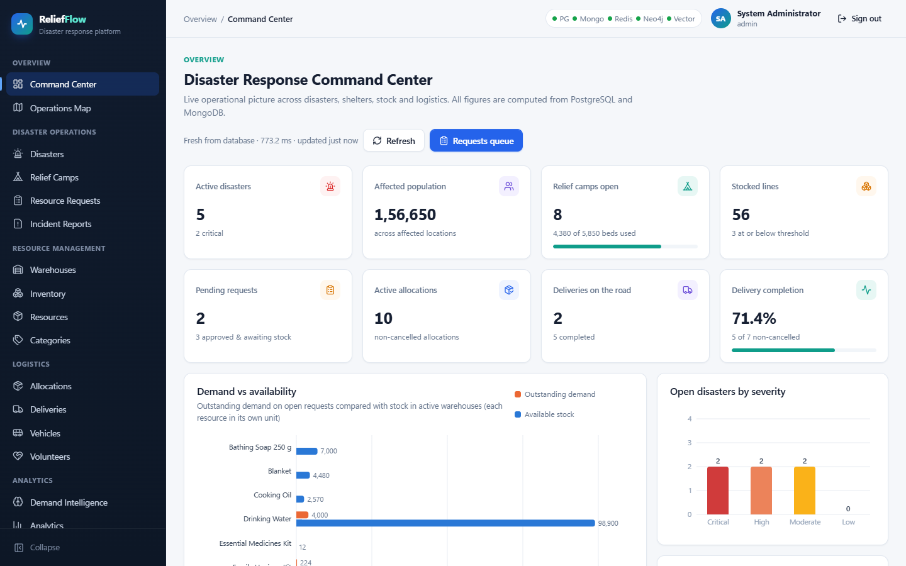
Command Center: live KPIs, demand vs availability, severity, trends and shortages.
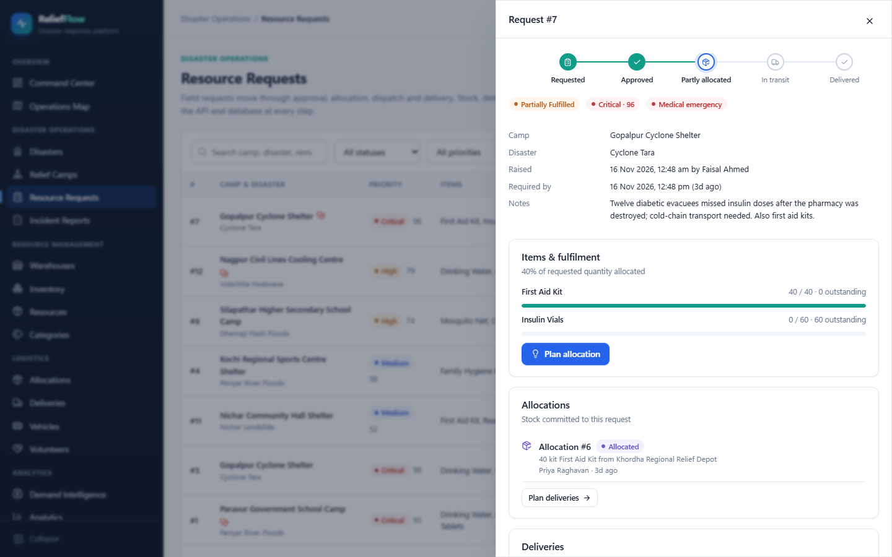
Request detail: pipeline stepper, fulfilment progress, approval actions.
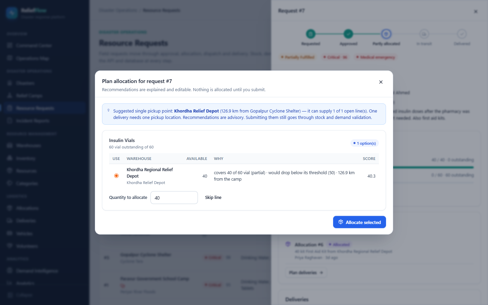
Explainable allocation recommendations (distance, threshold, coverage).
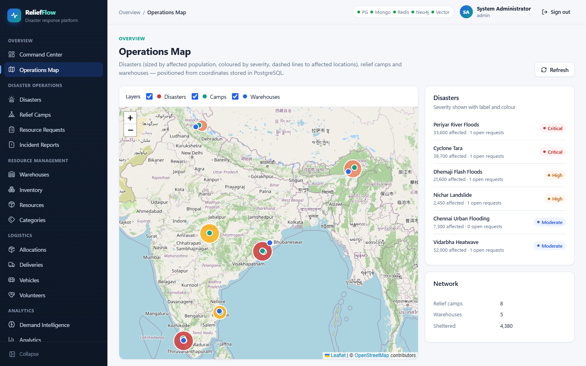
Operations map from stored coordinates.
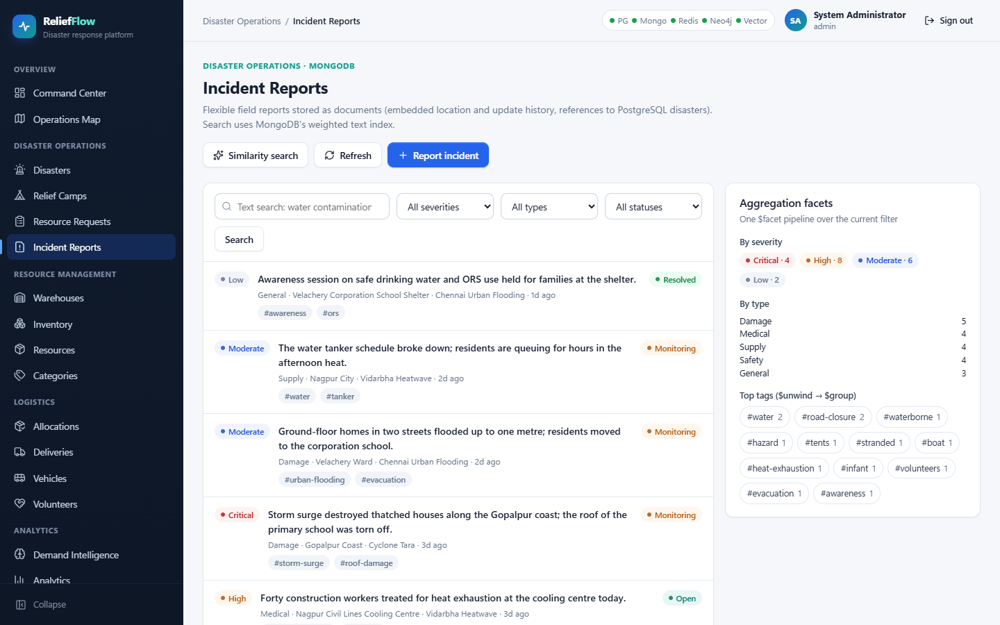
MongoDB incident reports with text search and aggregation facets.
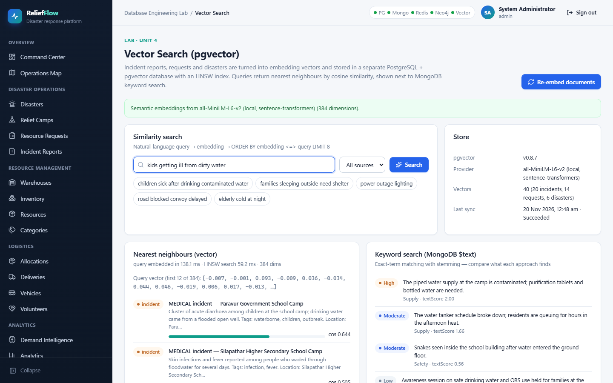
Semantic search (MiniLM + pgvector) next to keyword search.
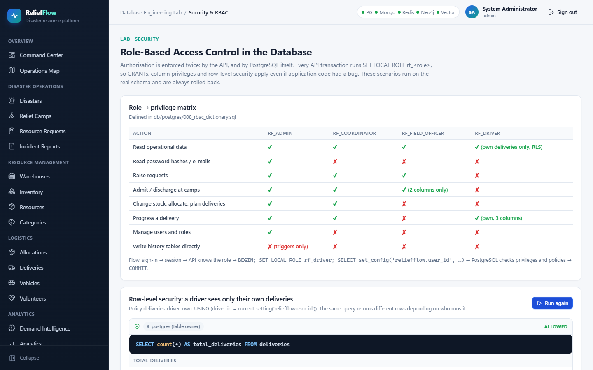
Database-level RBAC: PostgreSQL denies and filters by role.
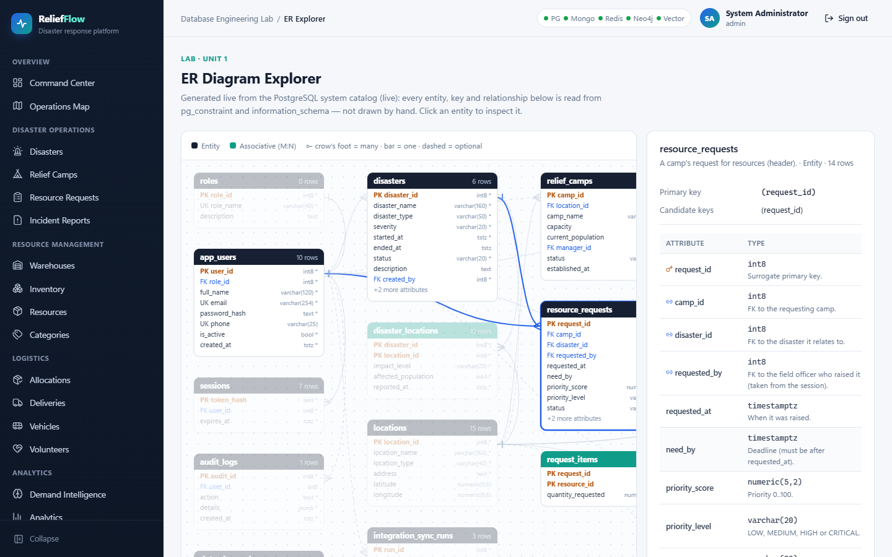
Live ER explorer with the in-database data dictionary.
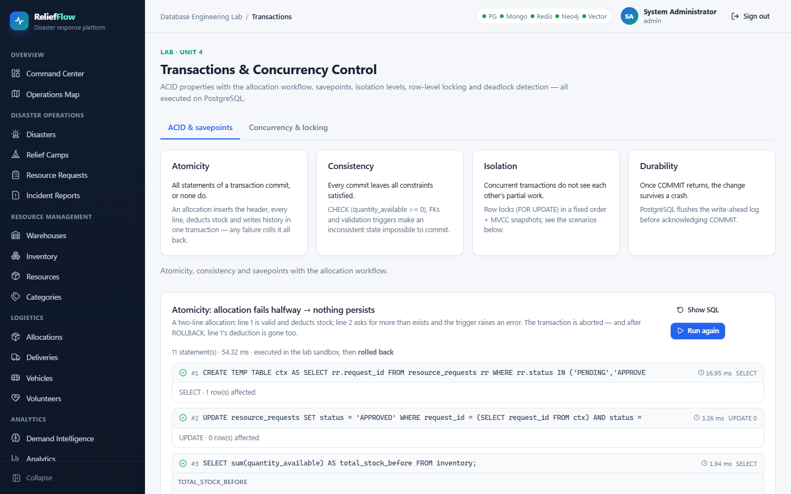
Two real sessions: row lock, wait, and CHECK-protected stock.
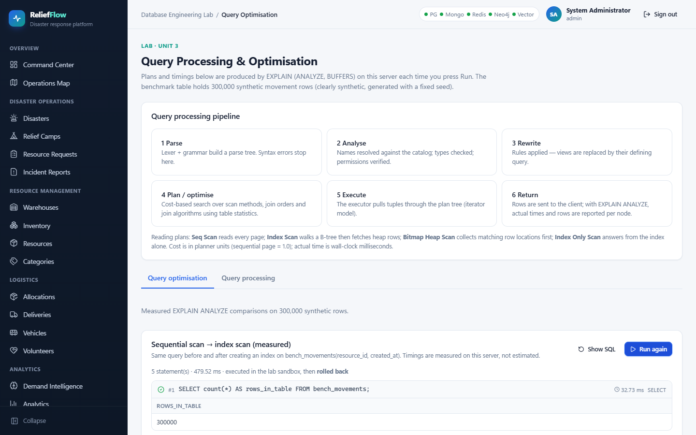
EXPLAIN ANALYZE plan trees with measured timings.
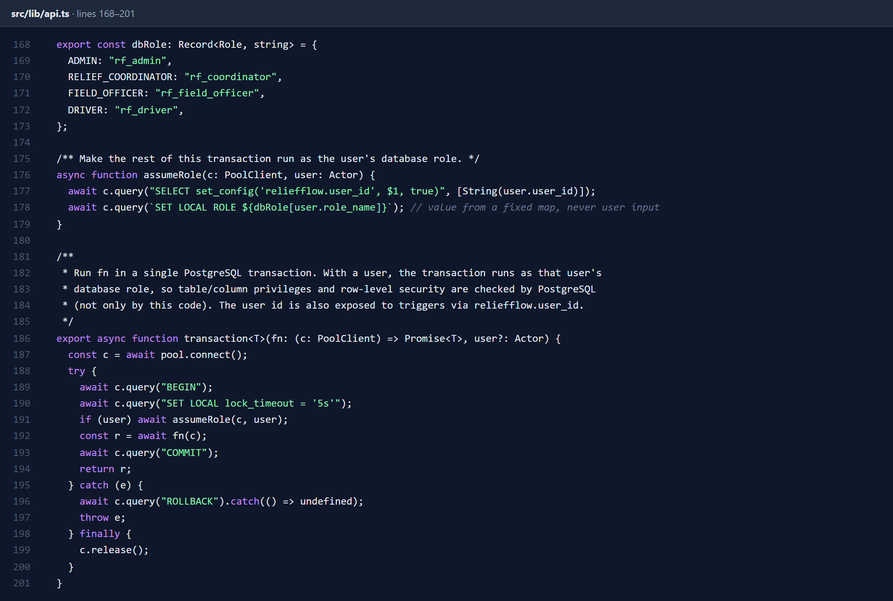
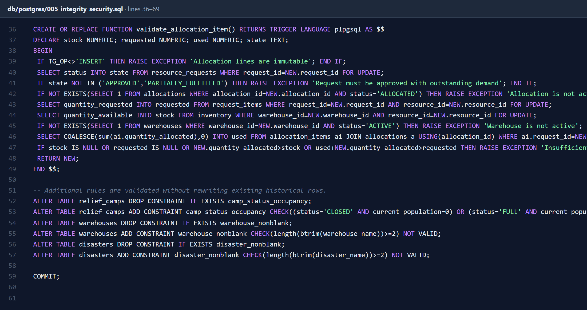
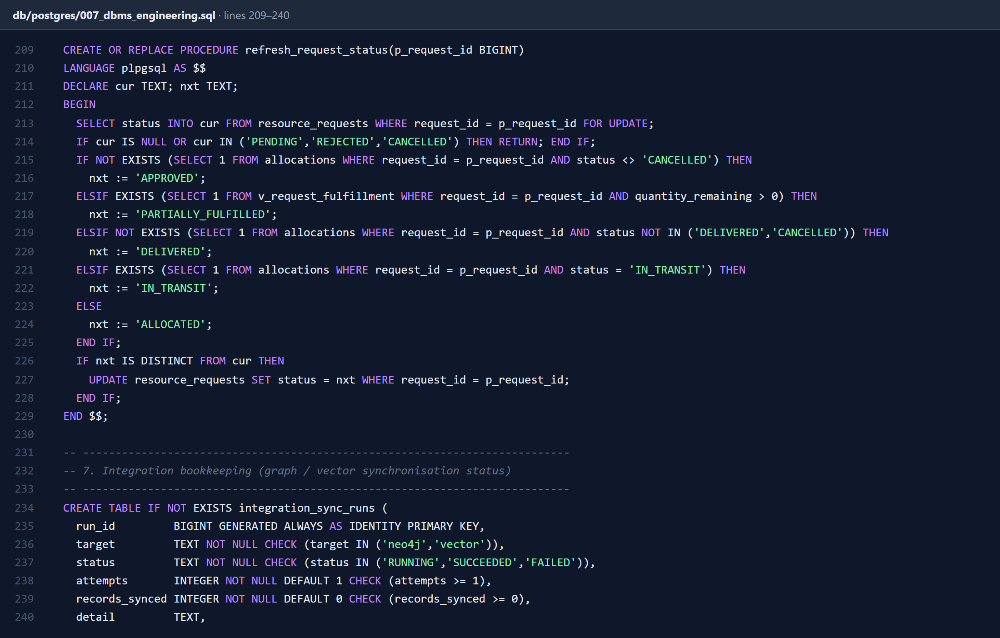


| Suite | Command | Result |
|---|---|---|
| Unit | npm test | 27 / 27 passed (validation, state machines, normalisation engine, SQL guard, origin check, embeddings) |
| Integration (end-to-end) | npm run test:integration | 30 / 30 checks passed on fresh PostgreSQL and MongoDB databases, including a Playwright browser run over every screen |
| Live services | npm run test:services | 4 / 4 passed (Redis, Neo4j sync, Neo4j failure and retry, pgvector) |
| Static checks | npm run lint, npx tsc --noEmit, npm run build | clean, clean, successful |
Selected test cases:
rf_driver, only own deliveries are visible and updates to others' rows affect 0 rows; reading password_hash is denied;| Criterion | Marks | Status | Evidence |
|---|---|---|---|
| ER diagram | 2 | ✅ Complete | §7.1, docs/viva/ReliefFlow-ER-Diagram.drawio |
| Relational schema with keys, relationships and constraints | 3 | ✅ Complete | §7.2–7.4, data dictionary §8 |
| SQL implementation: DDL with constraints | 4 | ✅ Complete | §9, db/postgres/001,005–008 |
| NoSQL / vector database creation | 4 | ✅ Complete | §7.5–7.6, §13–14 |
| Technology justification | 1 | ✅ Complete | §5 |
| DML operations | 4 | ✅ Complete | §10 |
| Nested / correlated / recursive queries and joins | 4 | ✅ Complete | §11 |
| Advanced SQL (procedure / function, trigger, CTE) | 6 | ✅ Complete | §11–12 |
| NoSQL / vector feature, CRUD | 7 | ✅ Complete | §13–14, Incidents page (create, read, update, delete), semantic search |
| Next.js interface | 3 | ✅ Complete | §19 |
| Backend / API and database integration | 2 | ✅ Complete | §15 |
| Authentication (front end) + ≥ 2 roles + RBAC in database | 4 | ✅ Complete | §16 (4 roles, PostgreSQL GRANTs and RLS) |
| Documentation, Git / GitHub | 2 | ✅ Complete | this report, README, GitHub repository |
| Originality, individual contribution, modification / viva | 4 | Presented live | §22 and the team explanation document |
| Area | SUJAL Y | SUJAN H |
|---|---|---|
| Database | PostgreSQL design: ER model, relational schema, DDL, constraints, indexes, views, triggers, functions and procedure, transactions and concurrency, DB-level RBAC with RLS, data dictionary | MongoDB data model, validation, indexes, aggregation; pgvector embeddings and semantic search; Redis cache; Neo4j graph projection |
| Application | Core API: authentication and sessions, requests, allocations, deliveries, camps, inventory, user administration; SQL, optimisation, normalisation, transactions and security lab pages | Next.js interface: design system, dashboard, map, management screens, incidents, intelligence, analytics; NoSQL, key-value, graph and vector lab pages |
| Quality | Database and integration tests | Browser (Playwright) tests, documentation, diagrams |
Both members contribute to database and application work, as required. Details are in ReliefFlow-Team-Explanation.pdf.
The source is maintained at github.com/Aqual456/DBSM-project, with a README covering setup and execution. Secrets (.env, .env.local), database backups and build output are excluded by .gitignore.
ReliefFlow shows that the choice of database follows the data:
It enforces correctness and security inside the databases (constraints, triggers, procedures, row locks, roles and row-level security), so the application cannot violate them even by mistake.
Future work:
docker compose up -d
docker compose --profile optional up -d --no-deps redis neo4j vectordb
npm ci
npm run db:migrate && npm run mongo:indexes && npm run db:seed && npm run lab:setup
npm run dev # http://localhost:3000
npm test && npm run build && npm run test:integration && npm run test:services